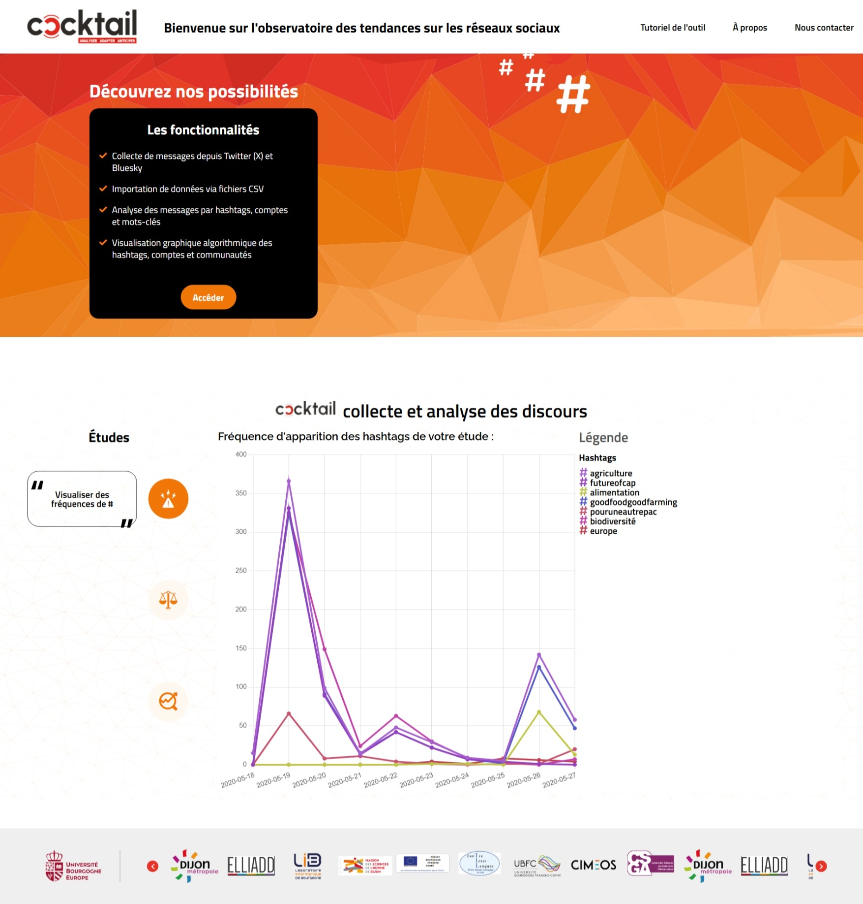
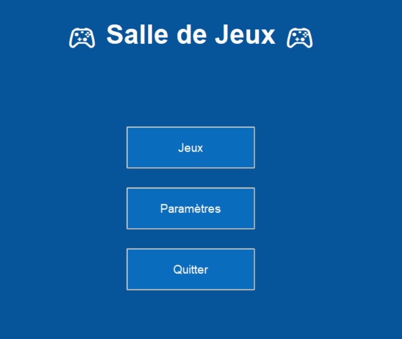
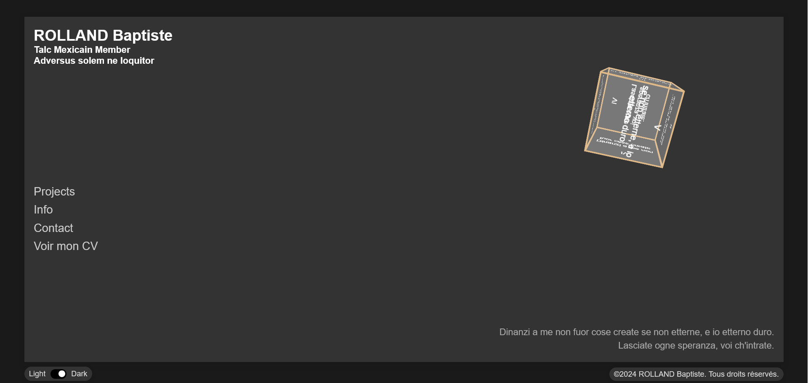

Plateforme Cocktail
Collecte et visualisation de corpus Twitter pour la recherche en sciences sociales.
Voir le projetPage temporaire de validation des tokens (mode sombre par défaut et mode clair) et des composants partagés. Consultez également la page d'accueil.

Collecte et visualisation de corpus Twitter pour la recherche en sciences sociales.
Voir le projet
Suite de 6 mini-jeux interactifs développés en JavaScript natif sans dépendances.
Voir le projet
Site statique multilingue avec thèmes clair/sombre et déploiement GitHub Pages.
Voir le projet